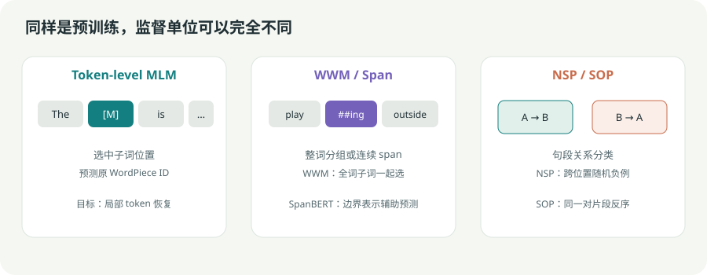

1. MLM 的监督对象：先选位置，再生成受损输入
设一条已经完成 tokenization 的序列为 x₁,…,xₜ。BERT 从可预测的 token 位置中抽取目标集合 M，原始论文设置的目标预算约为序列 token 数的 15%。输入端按 80/10/10 规则改变这些位置，但监督标签始终保留原 token ID。

令受损输入为 x̃，MLM 只在 M 中的位置计算词表交叉熵：
未选中的 token 仍然参与 Encoder 前向计算并提供上下文；它们只是不在本次 MLM 目标中直接作为词表分类位置。
这里有两个不同的集合：输入序列中的全部位置决定 attention 计算；目标集合 M决定哪些位置计算 MLM loss。因此“只有 15% token 参与计算”是错误说法。15% 指直接承担词表预测监督的位置比例，而不是 Transformer 只处理 15% 的输入。
1.1 80/10/10 的分母是什么
80/10/10 的分母是已经被选进 M 的目标位置，而不是整条序列。若一条序列有 1,000 个普通 token，期望选中约 150 个目标位置；其中约 120 个换成 [MASK]，约 15 个换成随机 token，约 15 个保留原样但仍参与 loss。这是期望数量，不保证每条序列恰好命中这些整数。
保留原样的 10% 并不是“无监督”。输入表面上仍是原 token，但模型仍要在该位置预测原 ID。随机替换的 10% 也仍以原 token 为标签。
2. 静态遮盖与动态遮盖：关键在遮盖何时生成
原始 BERT 的参考预处理脚本在数据准备阶段生成 masked examples，再把这些样本写入 TFRecord。脚本默认 dupe_factor=10，为同一文本生成多个不同的遮盖版本；论文与 RoBERTa 的对比说明，BERT 的训练数据以 10 份预生成遮盖样本扩充。它不是每个 epoch 都对原始文本重新采样一次遮盖。
RoBERTa 把遮盖模式推迟到模型每次读取样本时生成：同一条 token 序列在不同训练轮次可以得到新的 mask pattern。动态遮盖减少了预先存储多个遮盖副本的需求，也让长时间训练和大数据场景拥有更多遮盖组合。
| 属性 | BERT 原始预处理 | RoBERTa 动态遮盖 |
|---|---|---|
| 生成时机 | 离线预处理阶段 | 每次样本进入模型时 |
| 重复样本 | 通过 dupe_factor 预生成多个版本 | 可复用原 token 序列，每次重新采样 |
| 随机性 | 训练期间重复看到预生成的有限 mask 集合 | 每次呈现都可产生新模式 |
| 主要代价 | 数据文件体积与预处理时间增加 | DataLoader / collator 需要在运行时执行 mask 逻辑 |
RoBERTa 的消融实验并没有显示动态遮盖对每个任务都带来巨大跃升：在其 BERT-Base 重实现上，静态与动态的 SQuAD 2.0、MNLI-m、SST-2 指标相近，动态遮盖整体表现为相当或略好。作者选择动态遮盖，也考虑了它在更长训练和更大数据集上的效率优势。
3. Whole-word masking：改变被选中的单位，不改变 Encoder
WordPiece 会把一个自然词拆成多个子词。例如 playing 可能拆成 play 与 ##ing。如果每个子词独立抽样，一个词可能只遮住其中一部分，模型仍能从未遮住的词根或后缀猜出答案。
Whole-word masking（WWM）先把属于同一个原始词的 WordPiece 分组，再以整词为单位决定是否进入目标集合。被选中的词，其所有子词位置一起进入 MLM 目标。输出层仍然预测各个 WordPiece 的原始 token ID；变化的是目标位置的抽样单位，不是词表或 Encoder 结构。
对于中文字符级 tokenizer，WWM 需要额外的词边界信息：分词器或预处理器先识别一个中文词由哪些字符 token 组成，再把这些字符分组。它不是简单地把英文 WordPiece 的 ## 规则搬到中文。
4. SpanBERT：预测连续片段，并监督边界表示
很多下游任务关心的是连续文本片段，而不只是孤立 token：抽取式问答要找答案 span，指代消解要表示实体提及。SpanBERT 因此将独立随机 token 遮盖改为连续 span 遮盖，并增加 Span Boundary Objective（SBO）。
SpanBERT 的遮盖 span 长度从几何分布采样，参数设为 p=0.2，长度上限为 10，平均 span 长度约 3.8 个完整词。总遮盖预算仍约为 15% token；同一 span 内的 token 按 span 粒度替换。
对于被遮盖区间 [s,e]，SBO 不依赖区间内部已经被遮盖的 token 表示，而是利用左右边界 token 的上下文表示以及目标 token 相对左边界的位置 embedding，预测 span 内的每个原 token。最终训练目标把普通 MLM loss 与 SBO loss 相加。
5. NSP、SOP 与移除 NSP：负例决定模型学到什么
5.1 NSP 的负例有一个容易走的捷径
BERT 的 NSP 把 A、B 两段拼接，让模型判断 B 是否紧接在 A 后面。正例来自同一文档的连续片段；负例从语料其他位置随机采样，原始设计中正负样本各占一半。由于负例常来自不同文档，主题与写作风格也可能发生变化。模型因此可能利用“主题是否一致”这个较容易的线索，而不必真正理解段落顺序和连贯性。
5.2 ALBERT 的 SOP 把主题线索控制住
Sentence Order Prediction（SOP）保留同一文档中的两个连续片段：正例是 A→B，负例是把同一对片段交换为 B→A。由于正负例来自相同文本内容，主题线索基本一致，模型必须关注顺序和篇章连贯性。ALBERT 论文报告 NSP 在 SOP 任务上接近随机基线，而 SOP 能以合理表现解决 NSP 任务；这支持了“NSP 可能主要学到容易的主题差异”这一解释。
5.3 RoBERTa 选择不使用句间辅助损失
RoBERTa 不是简单删除一个 loss 就结束。它同时比较了不同输入打包策略：SEGMENT-PAIR+NSP、SENTENCE-PAIR+NSP、FULL-SENTENCES（可跨文档，跨文档时加额外 separator）和 DOC-SENTENCES（不跨文档，靠动态 batch 保持 token 数）。在其控制实验中，不带 NSP 的 full/document sentence 方案与原始 BERT 结果相当或略好；最终采用 FULL-SENTENCES 作为后续实验配置，主要考虑可比性与批处理便利。
| 目标/方案 | 负例构造 | 模型需要区分 | 主要风险/收益 |
|---|---|---|---|
| NSP（BERT） | 从不同语料位置采样 B | 是否为真实后续片段 | 可能借助主题差异走捷径 |
| SOP（ALBERT） | 同一对连续片段反序 | 篇章顺序与连贯性 | 负例更难，但增加辅助分类任务 |
| 无 NSP（RoBERTa） | 不构造句间二分类标签 | 仅通过 MLM 学习上下文 | 简化目标；输入打包策略仍然重要 |
6. 从这些目标中得到的设计原则
- 监督单位要贴近任务结构。 Token 级 MLM 适合通用上下文表示；span 级目标更直接地训练连续片段信息。
- 负例必须排除简单捷径。 不同文档的主题差异可能让 NSP 变成主题分类；SOP 用同一文本的反序样本控制了这类线索。
- 数据呈现方式也是目标的一部分。 静态/动态遮盖、双段/整段输入会改变模型每次看到的条件上下文。
- 消融结论只在具体配方中成立。 RoBERTa 移除 NSP 不等于所有句间关系学习都没有价值；ALBERT 的 SOP 与 SpanBERT 的 SBO 说明目标设计仍可按任务需求改进。
7. 交互：切换预训练策略，看看监督信号如何变化
选择一种策略
输出说明的是目标和数据构造，不是模型训练测得的指标。
样本：The player is playing outside. 预处理：离线生成遮盖版本；同一文本可用 dupe_factor 生成多个固定模式。 监督：被选中的 WordPiece 位置预测原 token。 关键点：训练期间重复呈现时，mask 模式来自预生成副本。
关键结论
- 80/10/10 的比例作用于已经选中的 MLM 目标位置；loss 只在目标集合计算，但全序列仍参与 attention。
- BERT 通过离线预处理和多个重复副本生成静态 mask；RoBERTa 在每次呈现时动态生成 mask。
- WWM 改变目标位置的分组单位；SpanBERT 进一步增加连续 span 和边界预测目标。
- NSP、SOP 和无 NSP 是不同的样本/目标设计，不能把某一篇论文的消融结论推广成普遍定律。
原始资料与延伸阅读
- Devlin et al., BERT, §3.1、Appendix A.1；官方 create_pretraining_data.py（dupe_factor、whole-word masking）。
- Liu et al., RoBERTa, §4.1–4.2、Tables 1–2。
- Lan et al., ALBERT, §3.1 “Inter-sentence coherence loss” and §4.6 “Sentence order prediction”。
- Joshi et al., SpanBERT, §3.1–3.3。